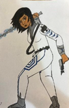
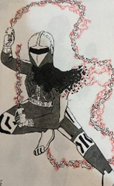
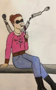
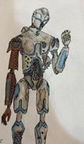

Below are a few of the characters of Forage, which include their bios and concept art. Our lead writer has spent much time on these characters and their history, coming up with the best and most interesting story for each of the members of the Forage universe. Sadly, we haven’t been able to create detailed concept art for other characters, as we are still in early development. However, we hope you enjoy this artwork done by Mary Francis, who did a great deal in helping visualize these select few characters.

Grace Summit
Grace Summit: Grace is the main character of the Forage Story. During the Omen war, Grace enlisted in the Neverending Conference at age 16 to escape her past. She proved capable of the war's worst battles and was assigned to the Phoenix fighters special forces group. Grace married fellow soldier Fidge Summit. On their final mission to Nilreb to destroy the Reap cycle's Holders of Fate, Grace succeeded, but Fidge was tragically killed by a Corvusite. She later gave birth to her son, Oscar, but due to severe PTSD, she couldn't care for him, and he was taken by child services. For nearly 10 years, she worked as a hired shadow hunter. Grace eventually quit and was approached by Herod Marizal to head security at his space station. She is now working to save money and mental health to regain custody of her son.
Reapmaster Indra Kori’Oscill
Reapmaster Indra Kori’Oscill: With every great hero, there’s a great villain. That’s who Reapmaster is. After the rest of the Reap Cycle were destroyed by the Conference, Indra Kori’Oscill became the final Corvusite. With her anger and malice taking over her, she made alliances to rebuild the Reap Cycle. With the Meteorites’ forces, Blackroot’s tech, and new Corvusite soldiers, she’s made an unstoppable force to retake the universe. No longer just another crow, Indra is now the Reapmaster, leader of the Reap Cycle, ruler of vengeance, and carrier of death.
Winter "Winny" Ecken
Winter “Winny” Ecken: Winter is a pilot with skills that no one can replicate. Despite a tragic past of her home being destroyed and becoming blind after an accident, Winter looks towards the bright side of everything. Although she is blind, she uses the eye-stalks that are connected to her to help her see, and when she connects them to the ship she pilots, it allows her an advantage over her opponents. While she is a more cheerful soul, Winter is also deeply familiar with the crime organizations that lurk in most cities in the galaxy.
ZK-33
ZK-33: Even though he was assigned the name ZK-33, this robot likes to go by the name Zeke. Zeke is an experimental type of robot, one made to be a doctor and to treat severe injuries of personnel. Sadly, the planet that Zeke lived on was turned into a wasteland after a massive storm destroyed everything, except the facility Zeke lived at. Now Zeke has become damaged after the personnel turning on each other, trying to survive. Zeke has two goals now, to protect the lives of those that trust him, and to find a way off planet.